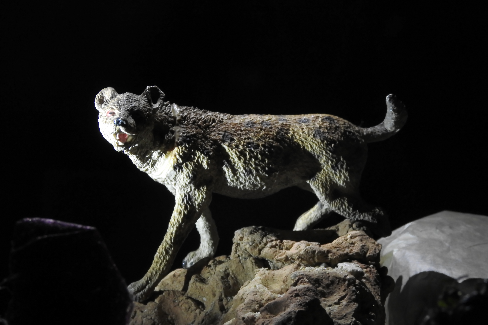

Pantera al asecho

Y aquí, al comienzo de subida incierta,
una móvil pantera hacia mí vino,
que de piel maculosa era cubierta;
como no se apartase del camino
y continuar la marcha me impedía,
a veces hube de tornar sin tino. (p. 6)
En esta foto, las dos luces sirven de luz principal: una es cenital y la otra es lateral. Esto sirve para darle a la pantera una apariencia temible y escalofriante, además de resaltar la textura de su pelaje. La pantera en sí no es el animal que causa temor a Dante, sino el león y la loba; sin embargo, no pude consequir una maqueta de león y para la loba solo conseguí la maqueta de un perro, así que para conseguir el mejor efecto decidí usar a la pantera.